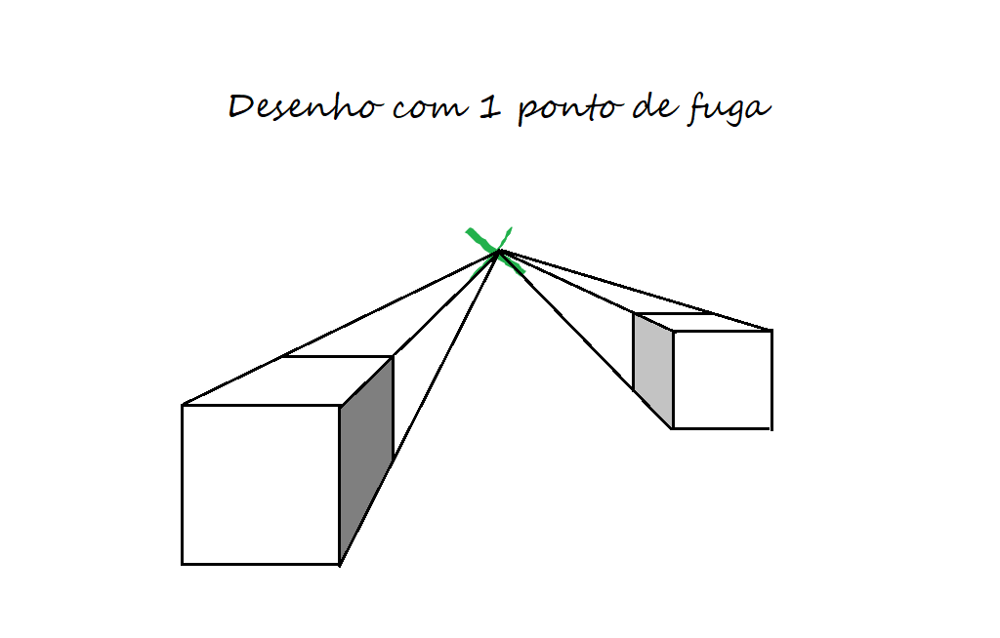
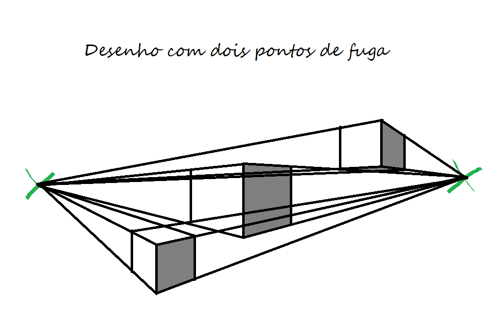
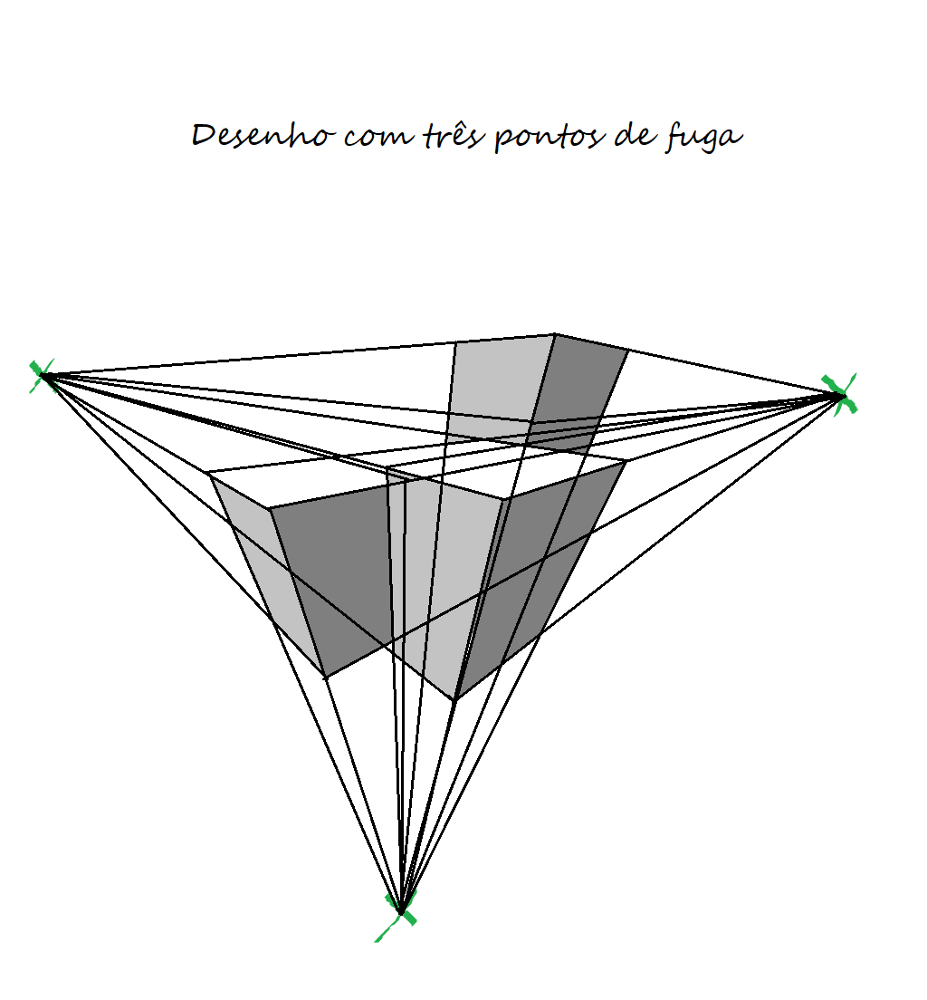
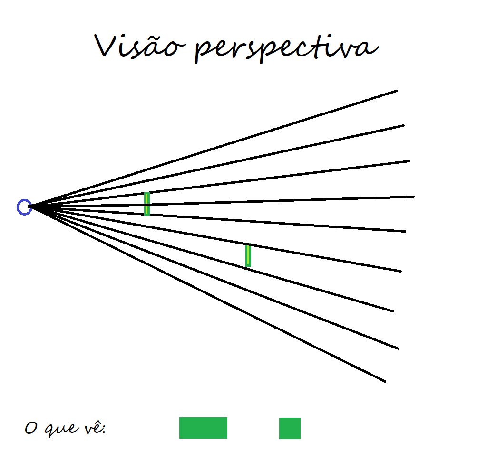
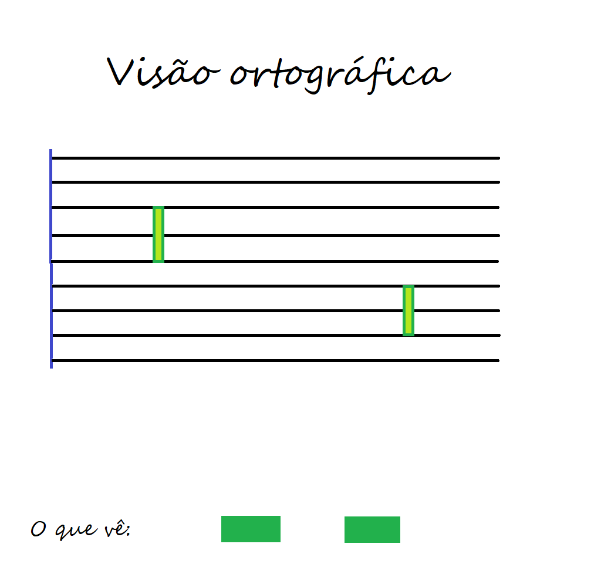
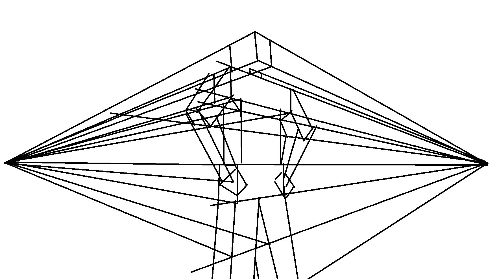

Perspectiva
Durante o período da resnascença, a arte voltou-se para um detalhe muito importante da visão: a perspectiva, o fato de coisas mais distantes parecerem menores. Observe a diferença, com um quadro da idade média e um da renascença:
{kind=link}
Como pode-se notar, não só os objetos distantes aparentam ser menores, como linhas paralelas parecem convergir para um mesmo ponto. Esse ponto se chama ponto de fuga e é levando-o em consideração que se desenham as retas
O exemplo mais simples de como desenhar com perspectiva é usando apenas 1 ponto de fuga, como na imagem abaixo. Note que as linhas em outras direções estão ou perfeitamente verticais ou perfeitamente horizontais. Isso já passa mais sensação de realidade, mas pode ser melhorado para objetos mais extensos ou com mais detalhes e linhas em várias direções.
Usar dois pontos de fuga pode parecer complicado, mas tendo entendido perspectiva com apenas um ponto vê-se que é simples. Uma das direções aparece perfeitamente reta e outras duas não, convergindo para um ponto ou para outro. Funciona particularmente bem para desenhar cidades.

E, melhor descrevendo a visão humana, existe a perspectiva com três pontos. Nessa se usa apendas linhas que convergem com as de mesma direção

Tá, mas de onde vem isso tudo?
Você provavelmente deve estar se perguntando porque as coisas são assim. De forma mais consisa possível, é por que os raios de luz que chegam até seus olhos atravessam lentes, a córnea e o cristalino do olho. Quando chegam a retina, onde são captados, existe uma angulação que faz com que um milímetro de retina não capte apenas um milímetro do que você vê. Se esse ângulo não existisse, teríamos uma visão conhecida como ortográfica, em que veríamos as coisas em tamanho real.
 Se tivessemos visão ortográfica, talvez fosse mais fácil desenhar algumas coisas, e ao olhar o céu noturno para contemplar a lua veríamos algo assim:
{kind=link}
O solo lunar em tamanho real. Mas isso exigeria olhos do tamanho do que fossemos olhar, o que é inviável.
Uma vez dominada a perspectiva, pode-se aplicar a qualquer coisa
Para isso, lembre-se que conseguir simplificar e detalhar é a chave de desenhar.
